国内热榜 · 精选
全球实时
视 频

AI 商业思维：五个思维转变
一堂白板课：AI 拉开的不是工具差距，而是思维差距。
AI 与 Agent 圈
8 条GPT-6进实验室设计蛋白、Gemini 4 Neon登顶LiveBench，Anthropic股价跌破发行价
11月25日前沿模型的主线从聊天转向可验证的科学产出：OpenAI称GPT-6设计的蛋白结合物在实验室里真的结合上了目标，谷歌Gemini 4 Neon则在LiveBench上反超Astra与Fable。与此同时市场给了AI一记冷水：Anthropic上市不到一周股价跌破83美元发行价。与之对照的是Agent落地的两面——Anthropic推出能批代码的Claude Ship，ShellBench却测出顶级Agent连日常任务都做不稳，TIME则以《弗兰肯斯坦时刻》为这场加速辩论定调。

GPT-6开始设计蛋白质：322个结合物里35个在实验室验证结合成功
OpenAI于11月24日公布，GPT-6仅凭推理与写代码设计出蛋白结合物的形状与序列，实验室对5个靶点测试322个迷你结合物，其中35个（约10.9%）显示出结合迹象。通用推理模型由此开始与专业生物设计管线正面竞争，但从“结合上了”到安全有效的药物仍有很长的路，接下来要看它能否在更广的靶点上稳定出图。
Gemini 4 Neon登顶LiveBench，反超GPT-6 Astra与Claude Fable
谷歌DeepMind的Gemini 4 Neon在LiveBench上超过OpenAI的Astra与Anthropic的Fable，重回榜首，同时也在HN热议的模型工程指数上拿到第一。这是不到两个月内谷歌推出的第四款Gemini 4变体，定位中端前沿模型，输入每百万token 3美元、输出15美元，上下文窗口100万token，厂商自报在科学与推理基准上领先。
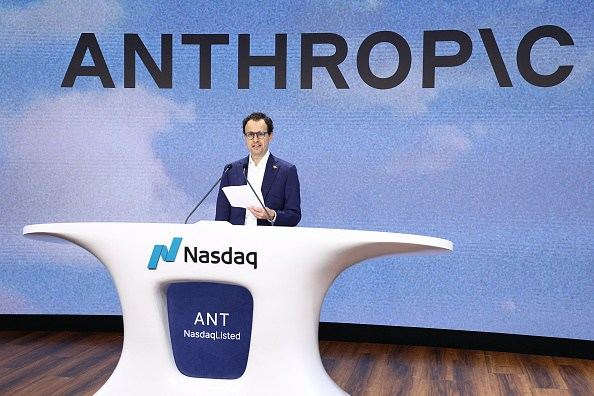
Anthropic上市不到一周跌破发行价，盘中低至76美元
Anthropic股价11月24日周二盘中一度跌至76美元，收于81.90美元，跌破83美元的IPO发行价，较11月19日首日开盘价111.50美元回落约三成，市值较高点蒸发近2000亿美元。11月25日收盘小幅回升至82.79美元，仍低于发行价。这次史上最大IPO转眼成了AI估值的风向标：市场不再为AI故事支付溢价，至少短期内是这样。
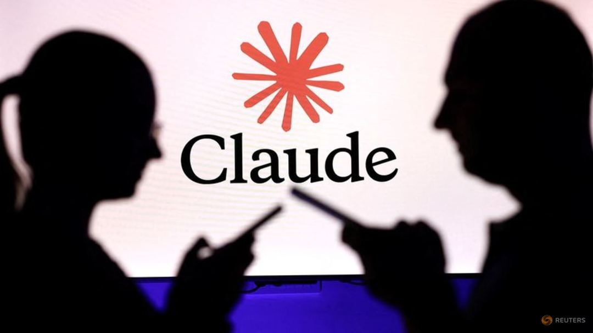
Anthropic推出Claude Ship：Agent审代码、修问题，还能按团队规则批PR
Anthropic于11月23日推出Claude Ship，面向Claude Team与Enterprise用户、接入GitHub，由三部分组成：已全面可用的Code Review，以及测试中的PR Steward（修CI失败、合并冲突与评审意见）和Claude Approvals（按团队写进仓库的策略文件自行批准常规改动、高风险改动交给人类）。开发者用Claude Code里的/shipping命令触发整条流水线。Anthropic同时提醒它可能漏掉bug与安全漏洞，建议先以只观察模式运行。
ShellBench：顶级Agent日常任务失败超三分之一，15.7%违反安全要求
新基准ShellBench联合OpenClaw基金会、Parsewave、Hugging Face、红帽与加州大学伯克利分校的研究者，基于1000多万次真实Agent交互，测试了OpenAI、Anthropic与Meta模型处理邮件、日历、收据等多步骤日常任务的表现：即便最强的模型失败率也超过三分之一，15.7%的尝试违反至少一条安全要求。GPT-6 Astra得分最高，但同一任务连做三次全部做对的概率不到一半；接孩子放学安排79.5%没处理好，重复或错误付款建议占40.3%。需注意研究未在各家原生助手里测试，结果未必等于消费级产品的实际体验。
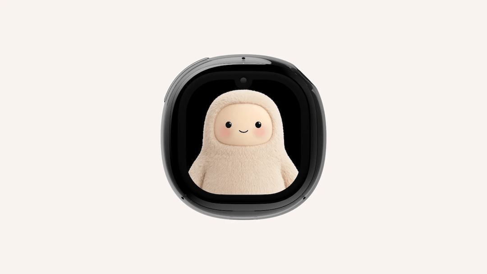
Meta把Muse推进Instagram私信，还能帮你把收藏变成旅行计划
Meta于11月24日宣布，AI助手Muse进入Instagram私信，用户可直接在私信里与它对话、发帖子让它执行操作，例如把一家咖啡馆加进墨西哥城行程、找一双鞋的黑五折扣，或补看错过的对话。Muse还能把收藏的帖子整理成合集与旅行行程、把菜谱变成购物清单。首批覆盖美国、加拿大、墨西哥、日本与新加坡的iOS与Android用户，同日Muse应用也在英国上线。
TIME：AI到了“弗兰肯斯坦时刻”，造物主开始公开呼吁踩刹车
TIME于11月24日刊发《AI的弗兰肯斯坦时刻》，借玛丽·雪莱1818年的小说谈AI失控之忧：Anthropic CEO达里奥·阿莫迪9月发文呼吁对前沿模型做外部监测与行业及全球监管，马斯克与奥尔特曼罕见地公开认同，比尔·盖茨则在NBC节目上警告AI可能引发导致多达十亿人死亡的事件。文章认为AI已从“回答”转向“行动”，写代码、上网、与其他AI协作，创造者正失去对造物的掌控。
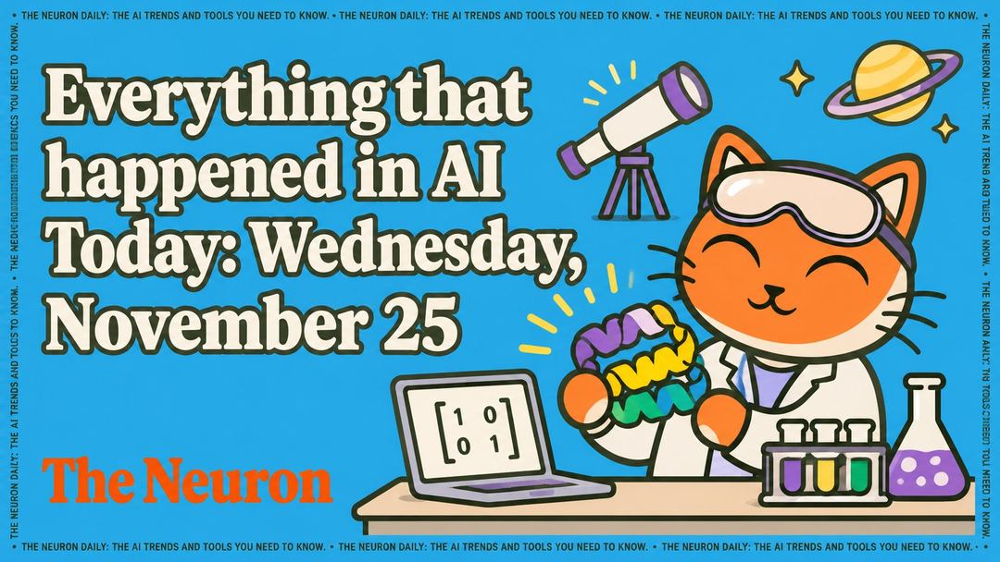
DeepMind探讨“AGI之后”：超级智能有四条路，包括数百万Agent协同
谷歌DeepMind的研究者发表《AGI之后》，探讨了通向超级智能的四种可能路径，其中包括数百万AI Agent协同工作的未来。报告把多智能体协作列为关键变量之一，与Agent单体能力的提升并列讨论。同一天，Anthropic的研究者重新审视了神经元级可解释性，回应了三点针对单个人工神经元研究的质疑，并探讨了这一路径对AI安全的意义。
全网科技
8 条FCC批SpaceX百万颗太空数据中心卫星，华为美国定罪、GTA VI首日卖出2450万份
今天科技圈的主线是监管与规模的双重加码：FCC史上首次批准轨道数据中心星座，SpaceX获准部署最多100万颗Starmind卫星；美国陪审团裁定华为12项罪名中10项成立，澳大利亚议会则通过《数字注意义务法》，科技巨头面临最高全球营收5%的罚款。与此同时，GTA VI以首日约23.6亿美元收入刷新娱乐首发纪录，而1Password披露内部系统遭入侵、停产的Cybertruck反成最畅销二手卡车。
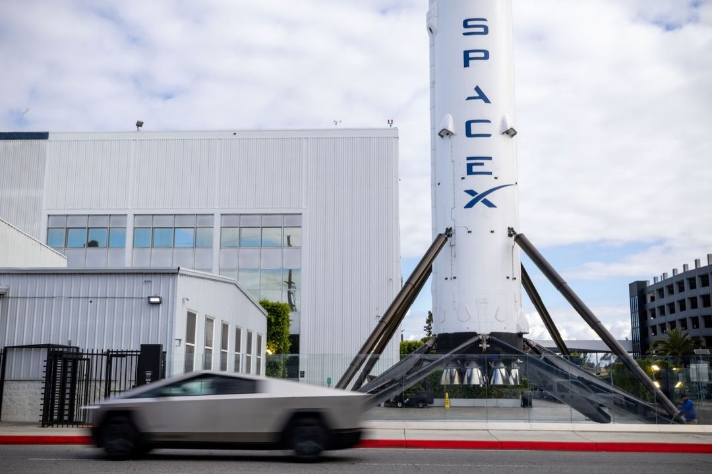
FCC批准SpaceX部署100万颗轨道AI数据中心卫星，史上首次
美国联邦通信委员会11月25日批准SpaceX部署最多100万颗卫星组成Starmind轨道数据中心星座，用太阳能供电、激光链路互联，在太空处理AI工作负载、把结果传回地球。这是美国史上首次批准太空数据中心星座。授权要求首颗运营卫星在2033年11月前上天，2035年部署10%、2038年50%，2040年完成全部；亚马逊、Viasat与美国天文学会曾以轨道碎片、射频干扰与环境影响为由反对，600公里以上卫星的报废处理方案尚未获批。
美国陪审团裁定华为有罪：12项罪名成立10项，涉伊朗制裁与窃取商业机密
纽约东区联邦陪审团经过三个月庭审，裁定华为及其三家子公司犯有共谋窃取商业机密、电汇与银行欺诈、违反《国际紧急经济权力法》、洗钱共谋等10项罪名，涉及向伊朗提供电信设备、对银行撒谎以获取数十亿美元及美元清算服务，以及窃取T-Mobile、思科等多家美国公司的技术。陪审团同时宣告敲诈勒索与妨碍司法两项罪名不成立。量刑定于2027年9月14日，华为称有罪指控“没有法律或事实依据”。
GTA VI首日卖出约2450万份、收入约23.6亿美元，创娱乐史首发纪录
据Sensor Tower估计，11月19日发售的《GTA VI》在预售加首日卖出约2450万份，收入约23.6亿美元，成为史上最大的娱乐产品首发，远超2013年《GTA V》三天10亿美元的纪录。游戏开发成本估计超过10亿美元。Rockstar与母公司Take-Two称需求“前所未有”，但尚未公布官方销量；分析机构预计其年内销售额将超过30亿美元。
1Password承认内部系统遭入侵：部分客户姓名邮箱被盗，密码库未被触及
1Password于11月25日披露，11月19日发现一名员工的企业GitHub账号被入侵，攻击者借此接触源代码、向后端服务植入恶意代码，下载了部分客户的姓名、登录邮箱、账号标识、账号创建与上次登录时间、公开密钥及邀请与恢复令牌。公司强调客户密码库及其加密密钥“在任何时候”都未被访问，应用与扩展不受影响，也未发现账号被接管的证据；涉事GitHub账号已停用，相关凭证已轮换，邮件验证码已从6位数字改为9位字母数字组合。
美国把Megaspeed列入实体清单，断供英伟达芯片
美国商务部11月23日将新加坡云服务商Megaspeed International及六家关联公司列入实体清单，此后美国企业向其出售包括英伟达顶级GPU在内的先进技术须先取得出口许可。Megaspeed自2024年起接受美国司法部刑事调查，被指协助将英伟达芯片转运至中国，公司否认有不当行为。同批被列入的还有阿里巴巴新加坡子公司Apex Enterprise Solutions。黄仁勋复职同一天清单落地，凸显白宫内部在对华芯片出口问题上的分歧。
澳大利亚通过《数字注意义务法》，科技巨头违规最高罚全球营收5%
澳大利亚议会11月25日通过《数字注意义务法》，要求谷歌、Meta等大型平台主动防范可预见的线上伤害，覆盖游戏、应用与AI聊天机器人，违规最高罚款为全球营收5%或1.09亿澳元中较高者，远高于最初方案的1.09亿澳元上限，法案一年后生效。个人还获得起诉平台的权利，监管机构扩权清理“换脸裸照”内容。法案与欧盟《数字服务法》、英国《在线安全法》同类，众议院以97票对43票通过。
黄仁勋向员工道歉、称接受心理治疗，12月3日赴参议院就芯片出口作证
复职两天后，黄仁勋11月25日向英伟达员工道歉、感谢白宫，并表示自己正在接受心理治疗。据委员会通知，他定于12月3日出席参议院银行委员会，就出口管制问题作证，12月1日还将出席众议院相关委员会。特朗普则对外放风称可能赦免黄仁勋，司法部长称英伟达是“好企业公民”。黄仁勋复职当日股价涨超30%的余波未平，华盛顿对芯片流向的追问仍在继续。
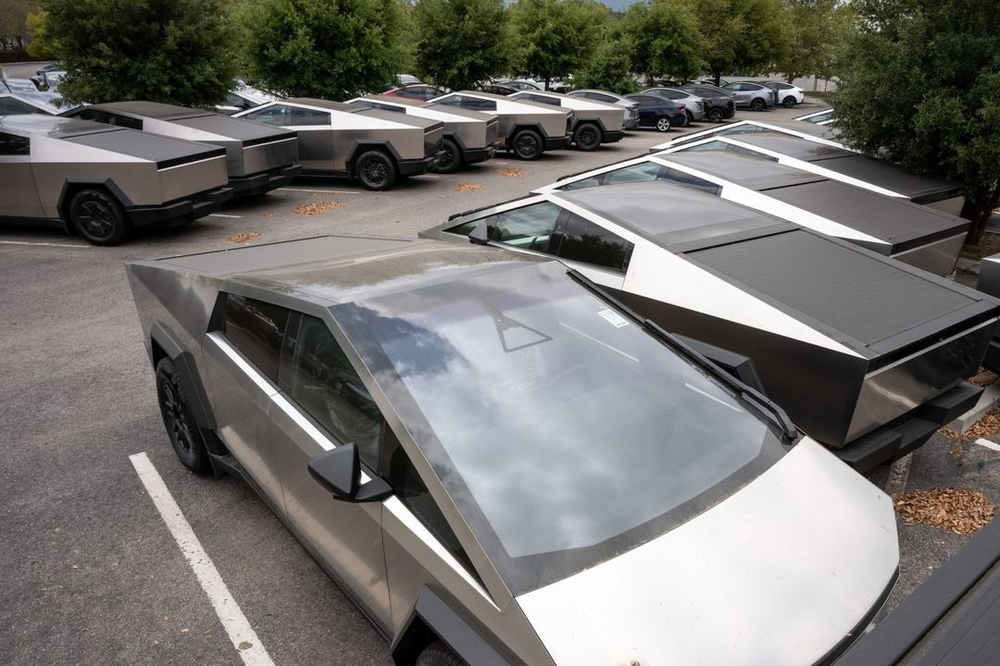
停产的Cybertruck反成美国最畅销二手卡车，平均39天就卖掉
iSeeCars分析2026年10月逾110万辆1至5年车龄二手车交易发现，特斯拉Cybertruck平均仅39.1天就售出，是全美卖得最快的二手卡车，远快于卡车整体65.5天的均值，力压福特Maverick混动版与Rivian R1T。25款最畅销二手车里有16款是纯电动车。颇具讽刺意味的是，这些是马斯克11月6日宣布2027年中停产之前的10月销量——新车卖不动的Cybertruck，在二手市场却因高油价与大幅折价成了抢手货。
时代周刊 · TIME
6 条时代周刊精选
特朗普政府宣布对中国、欧盟等国加征新关税
特朗普政府拟对 14 个主要贸易伙伴全面加征新关税，可能再度点燃全球贸易紧张局势。
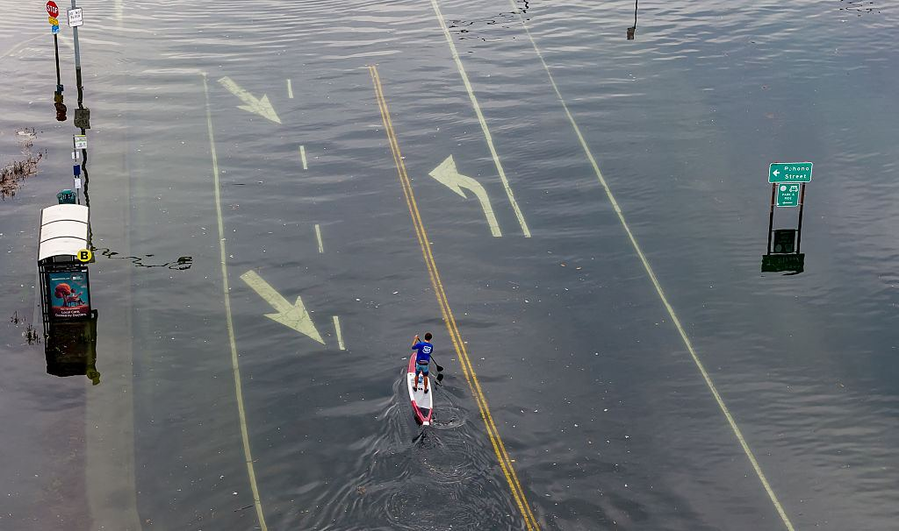
厄尔尼诺正在增强，影响已在多地显现
太平洋海水持续升温，在一些地方缓解了天气风险，在另一些地方却让情况更糟。TIME 梳理了现在与未来几周值得关注的变化。
营救被 ICE 拘留的普林斯顿科学家，呼声日益高涨
科学家 Eva Yi Xie 在参加完神经科学会议回家的路上被移民与海关执法局拘留，她的律师正就此在联邦法院提出挑战。
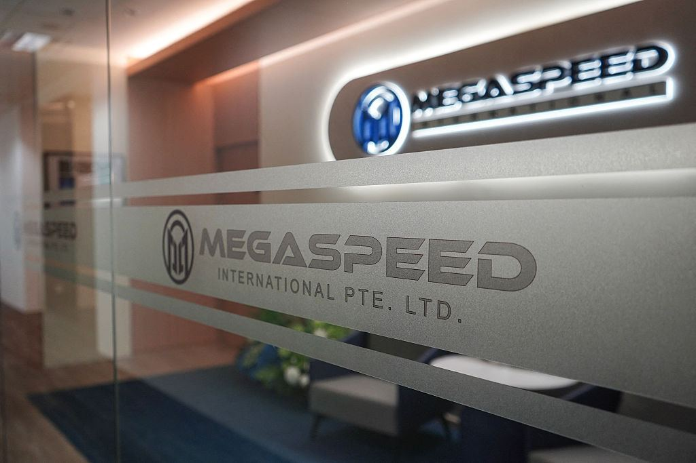
英伟达大客户 Megaspeed 背后的「危险信号」
公司记录揭示了一个复杂的企业网络，将英伟达的一家大客户与中国国有资本的历史投资联系起来。
华为在美被判有罪：涉银行欺诈与伊朗业务
中国最大的科技公司、全球最大的电信设备制造商华为在美国被判窃取商业机密、并就伊朗业务欺骗银行。
澳大利亚通过「数字注意义务」法，大型科技公司或面临数十亿美元罚款
澳大利亚新法规定，未能遏制平台网络危害的科技公司最高可被处以全球收入 5% 的罚款。
国际名媒
37 条 · 8 家世界名媒今日头条
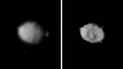
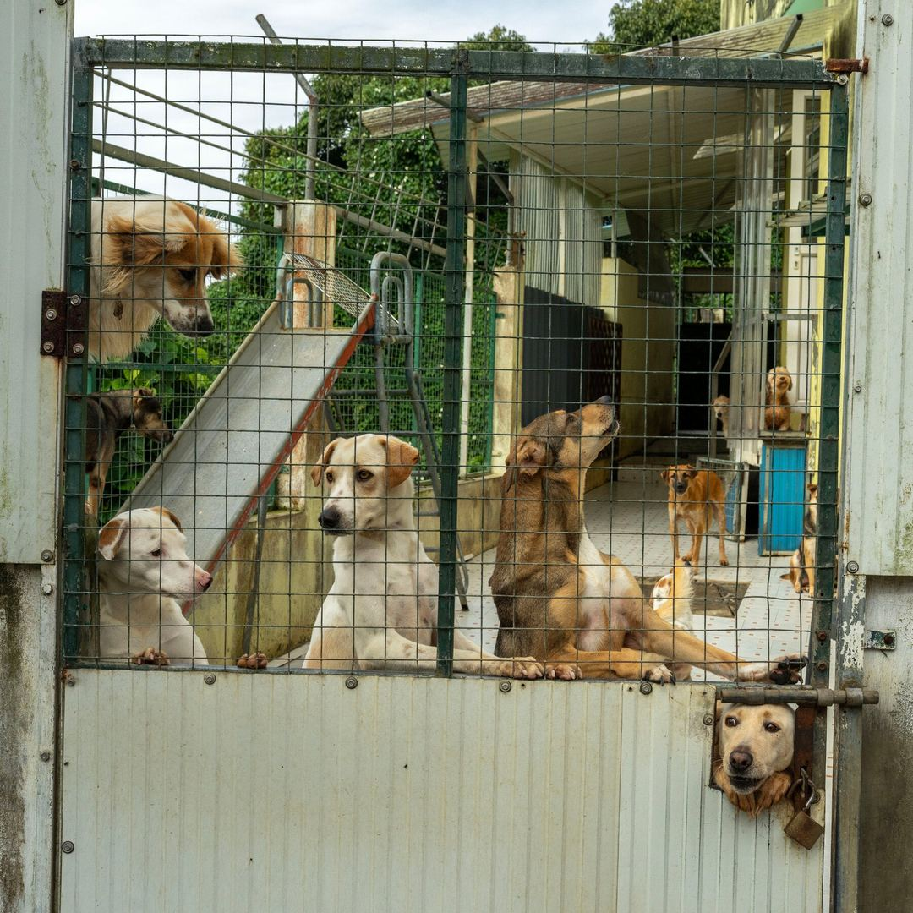
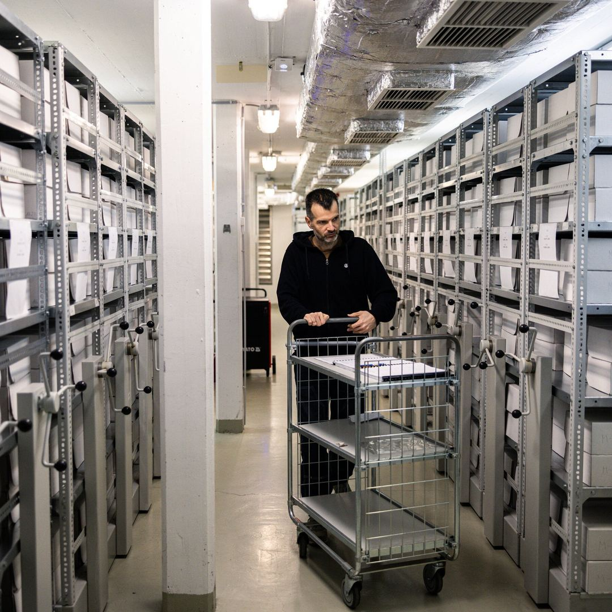